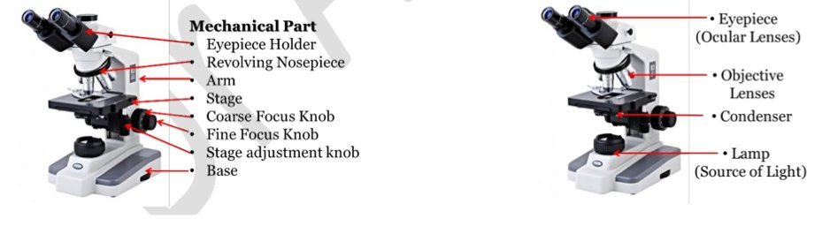

Methods of studying the cell
- Essentials
- Microscope parameters
- Light microscopy
- Fluorescence
- Electron microscopy
- Microscopes compared
- Cell fractionation
- Pulse-chase
- Exam traps
- Self-check
- Light microscope: photons through glass lenses; max useful magnification ×1000; resolution ~0.2 µm; needs fixation, sectioning, staining.
- Fluorescence: a fluorochrome absorbs light at one wavelength and re-emits at a longer one. FITC/GFP blue → green (proteins) · Rhodamine green → red-orange (mitochondria) · DAPI UV → blue (DNA).
- Immunofluorescence: direct = fluorochrome on the primary antibody; indirect = on the secondary antibody. Confocal = laser scanning point by point → sharp image, can be 3D.
- Electron microscopes: electrons under vacuum, electromagnetic lenses; resolution 0.2 nm (2 Å); no living specimens. TEM = goes through ultra-thin sections → ultrastructure. SEM = scans the surface (gold/carbon coating) → 3D surface.
- Homogenization conditions: isotonic buffer, 4 °C, neutral pH. ER, Golgi and plasma membrane fragments reseal into microsomes.
- DUC (by size, mainly): nuclei → mitochondria + lysosomes + peroxisomes → microsomes → ribosomes; large volumes, impure. DGU (by buoyant density, sucrose): high purity, small volumes. For a large, pure fraction: DUC then DGU.
- Pulse-chase: short exposure to a radioactive ("hot") precursor, then excess non-radioactive ("cold") precursor; sample over time; detect by autoradiography.
1 Introduction p. 2
- Studying cells needs several methods: observation, characterization, analysis.
- Microscopy (optical → electron) is the foundational tool: it enabled the discovery of the cell and the birth of cell biology.
- Combined with biochemical techniques such as cell fractionation, these complementary methods reveal morphology, ultrastructure and molecular composition.
2.1 Fundamental microscope parameters p. 2
| Parameter | Definition |
|---|---|
| Magnification | How many times the final image has been enlarged. |
| Resolution | The minimum distance between two points that can still be distinguished as separate. Human eye ≈ 200 µm. |
| Resolving power | How good the system is at distinguishing fine details — the critical parameter for image clarity. Inversely proportional to the resolution (smaller resolution distance = higher resolving power). |
2.2 Light microscopy p. 2–3 2023-24 · 2024-25
Structure
- Mechanical system: handling and focusing.
- Optical system: makes the image — light source, condenser with diaphragm, objectives, eyepieces (ocular lenses).

Light path and image
- Total magnification = objective × ocular; max useful ≈ ×1000
- Resolution ≈ 0.2 µm
Applications: histological tissue examination, cytological cell identification, microbiology, cell structure analysis, medical diagnosis.
2.2.6 Fluorescence microscopy p. 3–4 2022-23 · 2023-24 · 2024-25 · 2025-26
Many cell components are transparent and colourless: ordinary light microscopy cannot distinguish organelles or proteins. Fluorescence microscopy reveals them by specific fluorescent labelling.
Instrument: a white light source + a system that splits white light into its spectrum, with an excitation filter that selects the wavelength exciting the fluorochrome.
Common fluorochromes
| Fluorochrome | Excitation | Emission | Labels |
|---|---|---|---|
| FITC (fluorescein) / GFP (green fluorescent protein) | Blue | Green | Proteins |
| Rhodamine | Green | Red-orange | Mitochondria |
| DAPI | UV | Blue | DNA (binds it) |
Immunofluorescence (specimen preparation)
Principle: antibodies conjugated to fluorochromes detect and localize a specific protein.
| Technique | Where the fluorochrome is |
|---|---|
| Direct immunofluorescence | On the primary antibody |
| Indirect immunofluorescence | On the secondary antibody |
- Sample types: suspension cells → analysed by flow cytometry; adherent cells → analysed by fluorescence microscopy.
- Applications: protein localization, co-localization, expression quantification, clinical diagnosis.
Confocal fluorescence microscope p. 4
Improved fluorescence microscope: the light source is a LASER that scans the specimen point by point; a computer superimposes the acquisitions and reconstructs a sharp image that can be rendered in 3D.
2.3 Electron microscopy p. 4–5 2023-24 · 2025-26
- Principle: electron beams instead of photons, emitted under vacuum, accelerated by high voltage, focused by electromagnetic lenses; the image forms on a fluorescent screen.
- Magnification: from ×50 000 (TEM) up to ×1 000 000 (SEM) (as written in the PDF). Resolution: 0.2 nm (2 Å).
- Achievement: revealed cell ultrastructure and allowed the discovery of organelles.
- Critical limitation: living specimens cannot be observed.
Microscopes compared
| Light | Fluorescence / confocal | TEM | SEM | |
|---|---|---|---|---|
| Radiation | Photons (white light) | White light + excitation filter / laser (confocal) | Electrons | Electrons |
| Lenses | Glass | Glass | Electromagnetic | Electromagnetic |
| Resolution | ~0.2 µm | — | 0.2 nm | 0.2 nm |
| Max magnification | ~×1000 | — | ×50 000 | ×1 000 000 |
| Shows | Tissues, cells | Specific labelled molecules (proteins, DNA, mitochondria); 3D (confocal) | Ultrastructure (inside) | 3D surface |
| Preparation | Fixation, sectioning, staining | Fluorochromes / labelled antibodies | Ultra-thin sections | Gold / carbon coating |
| Living cells? | — | — | No | No |
3 Cell fractionation p. 5–6 2023-24 · 2024-25 · 2025-26
Goal: isolate cell structures for individual biochemical analysis — homogenization, then fractionation by ultracentrifugation.
3.1 Homogenization 2023-24 · 2025-26
Breaks the plasma membranes to release the cell contents → a homogenate containing all cell components.
- Isotonic buffer
- Low temperature (4 °C)
- Neutral pH
- Mechanical: grinding
- Physical: pressure, sonication
- Chemical: osmotic shock, detergents
- Biochemical: enzymatic digestion
3.2 Ultracentrifugation
Separates components by centrifugal force. Centrifuges faster than 15 000 rpm = ultracentrifuges.
| Differential (DUC) | Density gradient (DGU) | |
|---|---|---|
| Separates by | Size (mainly) and density | Buoyant density |
| How | Successive spins at increasing speeds; each spin sediments some organelles in a pellet, lighter ones stay in the supernatant for the next spin | Homogenate layered on a pre-formed gradient (usually sucrose) and spun once; each component stops at the level matching its density |
| Advantage | Simple, large sample volumes | High-purity fractions in a single spin, excellent separation |
| Drawback | Incomplete purification | Limited to small volumes |
4 Metabolic studies: pulse-chase technique p. 6–7
- Radioactive isotopes are used to track metabolic pathways.
- Isotope = an element that differs from the natural element by its nuclear mass; if unstable it disintegrates, releasing electrons or radiation = radioactive isotope: ³H (tritium), ¹⁴C, ³²P, ³⁵S, ²²Na, ⁴²K, ¹²⁵I.
- Pulse: living cells are exposed to a radioactive metabolic precursor ("hot") for a short time; it enters the cell and is incorporated into certain metabolic reactions.
- Chase: cells are moved to a medium with a large excess of non-radioactive precursor ("cold"), which the cell now incorporates — so the hot precursor already inside is pushed along the metabolic pathways.
- Analysis: samples taken at regular intervals follow the hot precursor as it is turned into labelled molecules; the compartments holding radioactivity are detected by autoradiography under the light or electron microscope.
Applications: protein synthesis and trafficking, DNA replication kinetics, secretory pathway analysis, metabolic transformations.
5 Conclusion p. 7
Modern cell biology combines microscopic visualization with biochemical (fractionation) and metabolic (radiotracer) analyses to understand cell structure, function and dynamics.
Exam traps
- "Light microscopy illuminates the sample with electrons" — false: photons. 2 questions
- "A TEM can observe natural samples without preparation" — false: ultra-thin specimens, and no living samples.
- "Fluorescence is used in electron microscopy" — false: it is a light-microscopy variant.
- "The fluorescence microscope is based on detecting electrons / deflection of photons or electrons" — false: it is based on molecules that absorb at one wavelength and emit at a longer one.
- "Microsomes come from the RER exclusively / from storage vesicles" — false: from ER, Golgi and plasma membrane.
- "Cell culture is a cell separation technique" — false. True in the same question: lysis by osmotic shock or ultrasound; gradient centrifugation separates by buoyant density.
- "Direct immunolabelling" when you have an unlabelled primary + a fluorochrome-coupled secondary antibody — false: that is indirect. Read it with fluorescence microscope, confocal, or flow cytometry (not phase contrast).
- For mitochondria: Rhodamine, not fluorescein, GFP or DAPI; excitation green, emission red-orange.
- "Protection from light" as a homogenization condition — false: isotonic, 4 °C, neutral pH.
- "DUC alone" or "DGU alone" for a large pure fraction — false: DUC then DGU (not the reverse). 2 years
- Measuring the speed of living, migrating cells with electron microscopes or flow cytometry — false: light microscopy (EM cannot observe living specimens).
- Organization of transporters in the inner mitochondrial membrane (ultrastructure): TEM, not SEM (surface) or light/fluorescence.
- Microtubule dynamics during division: fluorochromes + confocal; not TEM (no living cells) or flow cytometry.